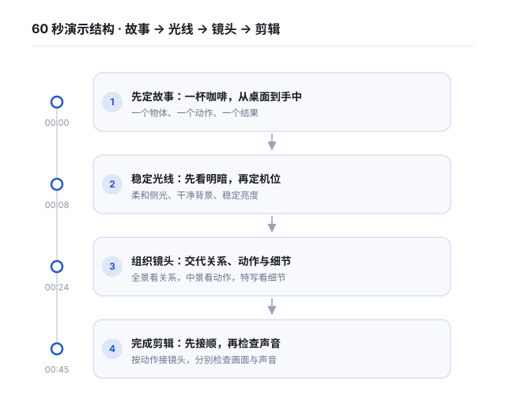

核心结论 / TL;DR
把「一杯咖啡从桌面到手中」讲清楚：先定故事，再稳定光线，用全景、中景、特写交代动作，最后检查画面与声音。这是一份可练习的拍摄方案，不是对真实作品的取证。
- 学习线：理解每个拍摄选择在表达什么；制作线：把同一选择变成机位、台词与操作。
- 开拍前先写一句故事：谁，对什么物体，做了什么；本例只拍「拿起咖啡」这个动作。
- 同一场景尽量保持光线、杯柄方向和手的位置一致，让相邻镜头能够衔接。
- 先读四个章节，再切到「对照看」；最后复制镜头清单，勾选自己的拍摄步骤。

先定故事：一杯咖啡，从桌面到手中
故事🕒 00:00–00:08演示开头计划先展示咖啡杯，再给出「从桌面到手中」这一句。它说明故事的起点与终点，后面的镜头围绕这个动作组织。
学习时看目的，制作时看选择。 这里的目的，是让动作顺序容易理解；对应的制作选择，是保留桌面、手与杯子之间的关系。示例没有真实成片，不能据此判断播放或传播效果。
先看成片：一杯咖啡，从桌面到手中。原创演示台词 · 非真实视频引文 🕒 00:03
这一段怎么做的
01用结果确定故事范围🕒 00:00–00:08
- 作用
- 交代这次要拍什么
- 怎么做的
- 计划用前 3 秒展示杯子，随后在 3–8 秒用一句台词说明动作。本页没有实拍画面，镜头与秒数均为预设。
- 画面 / 机位
- 杯子特写转桌面全景；固定手机，让手的动作范围留在画面内。
- 复刻要点
- 先把「从哪里到哪里」写出来，再摆机位；不要把冲煮全过程塞进这个拿杯练习。
稳定光线：先看明暗，再定机位
光线🕒 00:08–00:24先让窗光从杯子一侧照来，观察亮面、暗面与杯沿反光。如果光线过硬，可换到没有直射阳光的位置；如果暗面太重，可以在暗侧放一张白纸，观察是否需要补光。
确定构图后，检查背景是否抢眼、杯子是否清楚。若手机支持锁定对焦和曝光，可在当前机位试用；换机位后重新确认，避免把锁定设置当成一次完成的步骤。
先选窗边的柔和侧光，移动杯子，观察亮面和暗面。原创演示台词 · 非真实视频引文 🕒 00:08
| 观察什么 | 可以怎么调整 | 复查什么 |
|---|---|---|
| 杯沿反光过亮 | 转动杯子或改变手机角度 | 杯沿是否仍保留细节 |
| 暗面看不清 | 在暗侧靠近一张白纸 | 明暗关系是否仍有层次 |
| 背景过于杂乱 | 移开无关物体或改变取景 | 注意力是否落在杯子与手上 |
| 亮度或焦点跳动 | 机型支持时锁定对焦与曝光 | 换机位后主体是否清楚、亮度是否合适 |
这一段怎么做的
01试光并固定拍摄条件🕒 00:08–00:24
- 作用
- 让主体与明暗关系清楚
- 怎么做的
- 计划先展示侧光，再把白纸移入暗侧作补光示意。每次只调整一个条件，方便回看变化。
- 画面 / 机位
- 桌面侧面中景 + 杯子近景；用相同角度比较白纸加入前后的变化。
- 复刻要点
- 避免把白纸或手伸进需要保留的构图；换机位后重新检查焦点与曝光。
组织镜头：交代关系、动作与细节
镜头🕒 00:24–00:45全景交代桌面与手的关系；中景呈现拿杯动作；特写补充杯沿或手指接触杯柄的细节。这是本次练习的镜头分工，并不是所有短片都必须遵循的公式。
换机位时，记录杯柄朝向、手的位置和动作起点。每次拍摄在动作前后留一点空白，后续可以挑选自然的衔接点；不必为了凑镜头而加入无关画面。
先用全景交代桌面，再用中景拍手拿起杯子。原创演示台词 · 非真实视频引文 🕒 00:24
| 镜头 | 学习线：它说明什么 | 制作线：怎样拍出来 |
|---|---|---|
| 全景 | 桌面、杯子与手之间的关系 | 固定手机，把动作范围留在画面内 |
| 中景 | 手如何靠近并拿起杯子 | 靠近主体，完整拍一次拿杯动作 |
| 特写 | 杯沿、杯柄或手指的局部细节 | 重新确认焦点，保持杯柄方向与前镜一致 |
这一段怎么做的
01为同一动作拍三个景别🕒 00:24–00:45
- 作用
- 备齐能衔接的动作素材
- 怎么做的
- 计划依次拍桌面全景、拿杯中景与杯沿特写。不同机位重复同一动作，保持杯柄方向和手的位置一致。
- 画面 / 机位
- 全景 → 中景 → 特写；手机固定，每段动作前后各留约 2 秒素材余量。
- 复刻要点
- 清单中的时长是最终演示的安排；实际录制要更长，给剪辑留余地。
完成剪辑：先接顺，再检查声音
交付🕒 00:45–01:00把全景、中景、特写按动作顺序摆好，逐个检查切点：杯子是否突然换位，手是否重复起步，画面亮度是否突变。需要时调整切点或改用另一条素材。
先静音看画面，再戴耳机听声音。原声是否突兀，口播是否清楚，字幕是否与台词一致，都可以逐项修正。配乐是可选项；本演示没有附带音频素材。
最后把练习迁移到自己的物品：拍三个景别，剪成约十五秒的小片。这个时长是练习目标，可以根据动作调整，不是效果保证。
按拿杯的动作接起来，保留一点现场声。先看画面是否连贯，再听声音是否清楚。原创演示台词 · 非真实视频引文 🕒 00:45
这一段怎么做的
01接顺动作并给出练习🕒 00:45–01:00
- 作用
- 把素材整理成能复查的小片
- 怎么做的
- 计划先展示剪辑顺序，再回到拿杯结果。检查动作连续性、亮度变化和声音后，给出三镜头练习。
- 画面 / 机位
- 剪辑时间线示意 + 拿杯成片示意；这些画面需要自行制作，本包没有附带素材。
- 复刻要点
- 不必按音乐节奏强行切镜头。先检查动作，再决定是否需要字幕、配乐或转场。
制作快照
先看它的整体规格，决定你要不要照这个规格做
| 维度 | 本演示的设定 | 你的练习可以怎么定 |
|---|---|---|
| 内容性质 | 原创合成脚本；无对应视频、实拍帧或效果数据 | 用自己的实拍素材替换示意安排 |
| 时长 / 画幅 | 60 秒教学结构 / 竖屏 9:16 | 先完成约 15 秒的三镜头练习 |
| 章节 / 镜头 | 4 节配对 / 9 个计划镜头，共 60 秒 | 先拍全景、中景、特写各一组 |
| 光线 / 支撑 | 窗边柔和侧光 / 手机固定支撑 | 先试拍，检查反光、焦点和画面稳定性 |
| 声音 / 字幕 | 演示口播 + 自己录制的现场声 / 按语义断句 | 先保证能听清；配乐可省略 |
镜头清单
按顺序拍，拍完打勾；右上角可整表复制到表格里排期
| # | 画面 | 景别 / 机位 | 时长 | 道具 / 备注 |
|---|---|---|---|---|
| 1 | 00:00–00:03 · 杯子结果镜头（计划） | 杯子特写，固定机位 | 3 秒 | 杯子、咖啡；此段无口播 |
| 2 | 00:03–00:08 · 桌面、杯子与手（计划） | 桌面全景，固定机位 | 5 秒 | 手机固定支撑；字幕写明动作目标 |
| 3 | 00:08–00:16 · 窗光下观察杯子（计划） | 侧面中景 | 8 秒 | 窗边桌面；避开强烈直射光 |
| 4 | 00:16–00:24 · 白纸加入暗侧（计划） | 杯子近景，相同角度比较 | 8 秒 | 白纸；调整后重新检查曝光 |
| 5 | 00:24–00:31 · 完整拿杯动作（计划） | 全景 | 7 秒 | 记录杯柄方向与手的位置 |
| 6 | 00:31–00:38 · 重复拿杯动作（计划） | 中景 | 7 秒 | 相同动作起点，留录制余量 |
| 7 | 00:38–00:45 · 杯沿或手指细节（计划） | 特写 | 7 秒 | 重查焦点；保持道具与动作一致 |
| 8 | 00:45–00:53 · 镜头排列与自检（计划） | 自己的剪辑时间线录屏 | 8 秒 | 使用自己的素材；本包未包含录屏 |
| 9 | 00:53–01:00 · 拿杯结果与练习提示（计划） | 中景或特写 + 简短字幕 | 7 秒 | 字幕：拍三个景别，完成自己的练习 |
可直接念的口播稿
按照它自己的语速写成，念一遍就能录
先看成片：一杯咖啡，从桌面到手中。
先选窗边的柔和侧光，移动杯子，观察亮面和暗面。暗面太重，就用白纸补一点光。构图定好后，尽量保持亮度和焦点稳定。
先用全景交代桌面，再用中景拍手拿起杯子。最后补一个杯沿特写。换机位时，记住杯柄方向和手的位置。每次动作前后都多留一点，剪辑时就有余地。
按拿杯的动作接起来，保留一点现场声。先看画面是否连贯，再听声音是否清楚。现在选一件小物，拍全景、中景和特写，剪成你自己的十五秒练习。
器材与素材清单
开拍前照这张表准备，避免边拍边找
| 项 | 要准备什么 |
|---|---|
| 器材 | 手机、稳固支撑或三脚架（有则使用）、耳机（自检声音） |
| 场景 | 有柔和窗光的桌面、清理无关物品后的背景 |
| 道具 | 杯子与咖啡或常温有色饮品、白纸一张 |
| 素材 | 自行拍摄的全景、中景与特写、自行录制的口播和现场声、需要时录制自己的剪辑时间线 |
| 本包包含 | 结构化演示数据与四件套成品；不含视频、照片、配乐或录屏 |
剪辑与包装
同样的素材，这几个参数决定像不像
| 环节 | 本次练习的起始设置 / 检查方法 |
|---|---|
| 画幅 | 计划用竖屏 9:16；拍摄前统一，避免后期裁掉手或杯子 |
| 拍摄规格 | 支持时可从 1080p、30 fps 开始；画面亮度与闪烁情况需在现场试拍确认 |
| 切点 | 围绕同一拿杯动作选择切点；回看手的位置和杯柄方向 |
| 字幕 | 按语义断句，避免遮挡手和杯子；在手机上检查实际可读性 |
| 声音 | 先让口播听清，再决定现场声与配乐的相对音量；不预设通用音量百分比 |
| 导出 | 可从 1080×1920、与素材一致的帧率开始；导出后重新检查画面、字幕和声音 |
执行清单
从上到下做完就能发一条；勾选进度会自动保存
换角度做同款
结构不变、只换内核，避免和别人撞车
- 换成拿起一本书：保留「故事 → 光线 → 镜头 → 自检」的步骤，重新设计手与书的动作。
- 换成一枝花：用全景交代花瓶位置，用中景拍插花，用特写补充花瓣细节。
- 只做约十五秒练习：保留三个景别和一个完整动作；根据自己的素材调整时长。
踩坑与提醒
作者明确提到的失误 / 警告本例只需要手机、稳固支撑和一张白纸。先检查光线、背景和焦点，再判断是否需要额外设备。 🕒 00:08
杯柄方向、手的位置或动作阶段不一致时，相邻镜头可能难以衔接。换机位前拍一张工作照记录摆位；本演示未提供这类照片。 🕒 00:24
60 秒结构、9 个镜头和以下参数都是示意安排。实际语速、场地、设备与素材可能需要不同设置，应试拍并回看。 🕒 00:45
可执行结论
- 写下一句故事：一个物体发生一个动作，结尾有一个可见结果。
- 在同一光线下拍全景、中景、特写，记录杯柄方向与动作起点。
- 先静音检查动作连续性，再戴耳机检查声音，最后核对字幕。
术语表
| 术语 | 释义 |
|---|---|
| 景别 | 主体在画面中占据的范围。本例用全景交代关系、中景表现动作、特写呈现细节。 |
| 侧光 | 从主体侧面照来的光，可以用来观察物体明暗与形状。具体效果取决于光源位置和光线软硬。 |
| 连续性 | 相邻镜头中的位置、方向与动作关系能够衔接，让同一动作容易被理解。 |
| 动作余量 | 在主体动作开始前和结束后多录的一小段素材，给选择剪辑点留下空间。 |